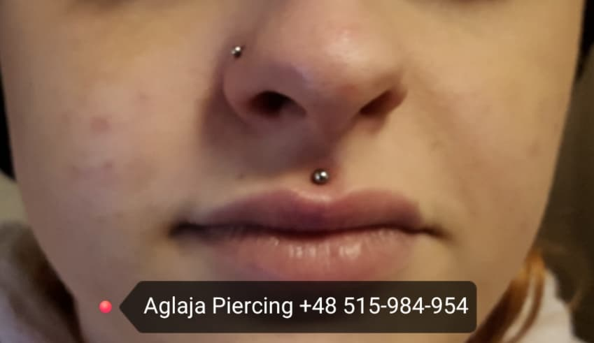

List of piercings
Ears
Ear piercings are the most popular type of piercings since the ancient times. Unfortunately because of that a lot of people are doing them unprofessionally (who didn't hear about the potato method?) which repeats fake infos. Of course in this (and every other) section i won't show all of the piercings, only the most popular ones.

Standard lobe and upper lobe piercing. Time of healing: 1,5-2 months.

Tragus, a cartillage piercing (here a triple one) near the ear canal. Remember that granulomas are quite frequent here. Time of healing: 3-4 months.

Helix - one of the most popular cartillage piercings. Remember that granulomas are quite frequent here. Time of healing: 3-4 months.

Industrial, popular piercing, but not always possible because of anatomy. Before coming to a piercer, send a picture of your ear, so the piercer will decide if it's possible. Granulomas are very frequent here! Time of healing: 6-9 months

Composition of different piercings, mainly in cartillage. There are conches, traguses, lobes, rookes and snugs, with the last one's time of healing is 4-5 months and different one's in cartillage is 3-4 months. Granulomas might happen.
Nose
Nose piercings are becoming more popular, mainly because of spectacular looks, low pain level and fast healing. Don't do any eye make-up for nose piercings appointment - you'll start to tear ;).
Healed septum piercing. Not hurtful, with healing time of 1-2 months.

Nostrils - not hurtful, with healing time: 2-3 month.

Bridge, although scary-looking, is one of the least hurtful piercing. Not "problematic", with healing time of around 3 months.
Mouth cavity and surroundings
Piercings of that area are not hurtful, but taking care of them is different and you'll find it here.It's the same with those piercings, that are partially inside the mouth cavity.
Most popular piercing in this area. Not hurtful at all. After around 2 weeks go to your piercer, who will change the ring to a shorter one. Time of healing: 1-2 months.
Vertical labret is a piercing of a lower lip. Time of healing: 2-3 months.

Smiley is a piercing in the frenulum of mouth. Time of healing: 1 month. Talk with your piercer, cause the frenulum might be too short.

Medusa is a piercing in philtrum. Care as in BOTH skin and mouth cavity piercing. Time of healing: around 3 months.

Cheeks can be done two ways: by needle and rings (time of healing: 4 months), or microdermals (time of healing: 2 months).
Ashley, like medusa, goes through lip to the mouth cavity. Time of healing: 2-4 months.
Snake bites are piercings going through the lower lip, usually symmetrically. Time of healing: 3-5 months.
Microdermals i surface-bars
So called surface rings. They let you have beautiful piercings in almost every area of your body. Of course some of them will be extremely hard to maintain. They're not made by needle, but a special scalpel (in case of microdermals).
Typical surface-bar. Be aware that skincare products will irritate it. Time of healing: 3-4 months. Can be done on microdermals.
Sternum, again a surface-bar piercing, but can be done by microdermals. Time of healing: 3-4 months.

Sternum on microdermals. Time of healing: 2 months (same for every microdermal).
Surface bar in the nape. Can be done on microdermals. Time of healing: 3-4 months.

Microdermals will allow you to have a piercing even in strangest places, for example on a thumb :)